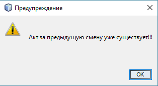
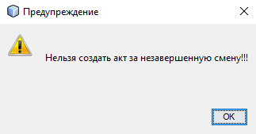
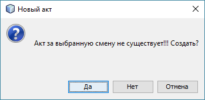
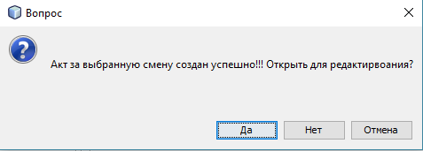

Имеется возможность создать акт для любой смены на любую дату.
Перед созданием акта, приложение предложит выбрать дату и смену создаваемого акта.
Выбор даты и смены осуществляется при помощи диалогового окна следующего вида:

Выбрать требуемую дату необходимо при помощи выпадающего календаря:

Также следует отметить, что для удобства создания и открывания актов, диалоговое окно содержит таблицу с перечнем уже созданных актов.
При изменении месяца в календаре выбора даты, таблица с перечнем актов автоматически обновится для выбраного месяца.
Если пользователь выбрал дату и номер смены уже существующего акта, система оповестит его об этом при помощи сообщения:

Если пользователь выбрал дату и номер еще не прошедшей смены, система оповестит его об этом при помощи следующего сообщения:

Если дата и номер смены введены верно, то приложение попросит подтверждение на создание акта:
 После удачного выполнения всех операций по созданию акта, приложение выдаст соответствующее сообщение
с подтверждением открытия акта для редактирования:
